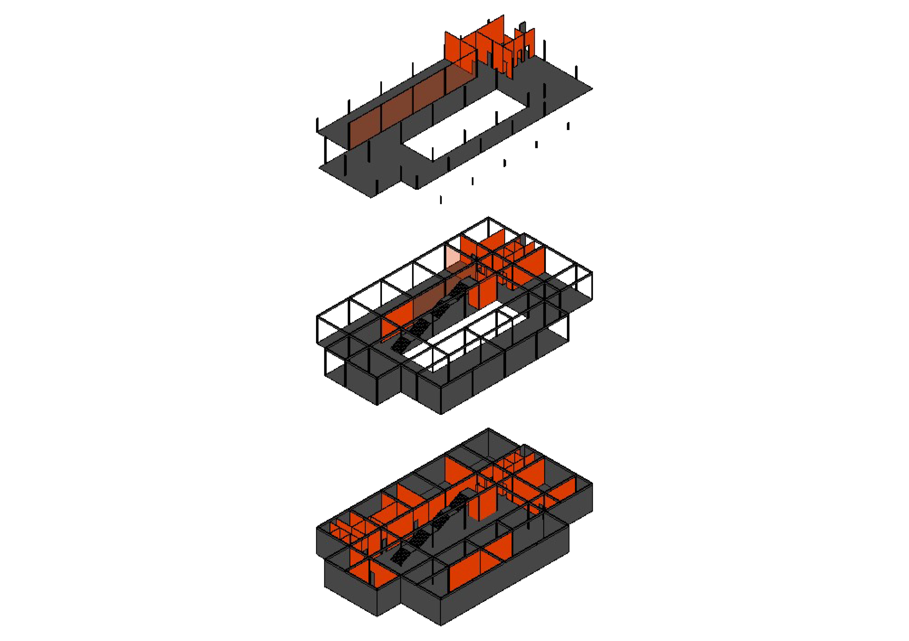

studio 4
from industrial memory to an artistic hub: the transformation project in tepebaşı/eskişehir
This project is aimed at the sustainable regeneration of the existing factory buildings in Eskişehir Tepebaşı, integrating contemporary architectural principles and cultural sustainability concepts. The project area transforms the existing mechanical potential by preserving it and connecting it to the Faculty of Fine Arts. Each building is reorganized as a discipline-serving artistic center, featuring workshops, exhibition spaces, open-air activity platforms, and open-plan equipment.
Factory 1 is structured to host more digital arts, Factory 2 for plastic arts, and Factory 3 for performance arts. These buildings are designed with semi-public layouts and courtyards that encourage users to intervene and interact in the spaces between them.
In addition to this transformation, a student center is designed, focusing on the needs of students in the area. The new structure respects the texture of the industrial heritage while presenting a contemporary approach. It includes a cafeteria, study areas, resting sections, and many other amenities, providing a social platform where students from various disciplines can gather and interact.
The project aligns with the goal of preserving industrial heritage and transforming it into a modern education and art complex, meeting the needs of urban memory and contemporary requirements in harmony.


basement floor plan

ground floor plan

first floor plan

elevation 1

elevation 2
elevation 3
elevation 4

elevation 5
isometric inside
